以沉浸式体验传播雪宝顶户外徒步的魅力，让观众在100㎡空间内完成一次从"知道"到"想出发"的认知旅程。
在100㎡空间里，把"想去"种进心里。
三大内容板块贯穿全展：
户外徒步的核心体验是什么？答案是：呼吸。
呼吸在这里意味着什么？
呼吸的五段旅程——从屏住呼吸到深呼吸
"进入与城市不同的世界"
从古城日光的喧闹进入暗空间。视觉大幅收窄，只留地面一条光带刻着海拔刻度「500m → 3308m → 5588m」。
背景音：一下沉重的呼吸声 → 三秒静默。
松潘的呼吸——原来这里是这样的地方
一面墙是"历史的痕迹"，一面墙是"当下的面孔"
四件物品各挂在一根从天花板垂下的绳上，每件下方只有一句话。视觉上从不同方向"汇入"松潘——物理上呈现"交汇"。
四幅人物肖像摄影（真实感、非摆拍），每人一句话
A主场——融合不是抽象概念，是茶砖、马鞍、药材和四个人的日常。
本区墙面上出现的文化标记元素——羌绣云纹、茶砖烙印、马鞍皮具工艺——会被设计为可识别符号。观众走到发展B时发现："这个纹样在入口看到过"→形成呼应。
三条线路、三种呼吸节奏——同时都在文化肌理中穿行
途经上纳咪村（藏寨）→ 沿途可见羌绣云纹导示牌（与入口陈阿姐的绣片图案相同）
穿过千年茶马古道垭口（与入口茶砖/马鞍的路线重叠）→ 营地旁有采药人小路（与入口药材呼应）
经过雪宝顶寺庙（藏传佛教）→ 沿途有藏族向导扎西家所在的村庄（与入口人物肖像呼应）
每张地图下方标注——"你刚才看到的羌绣/茶马古道/当地向导——就在这条路上。"
三条线路的坡度转化为呼吸频率波形线——平缓段是"吸——呼——吸——呼"的长间隔，陡坡段是"吸呼吸呼"的短促节奏，登顶是长长的一声"呼——"。波形线叠印在地图侧边。
一个展柜里放冰镐、冰爪、高山靴、氧气瓶。重点不是装备本身，而是"谁用过它们"——旁边放向导扎西的肖像与他的原话：
让更多人安全地呼吸——冷静、透明、信任
整个流程用一条呼吸曲线串联——呼吸正常（绿）→ 呼吸异常（黄）→ 救援介入（红）→ 恢复呼吸（绿）。管理办法不是"规定"，是"保障"。
向导卡展示——每张卡上一个头像、名字、他走了多少次这条路线、他说的最好的一句话：
向导是本地人（融合），平台为了让不同水平的人都安全进入这片土地（共享秩序）。
让山自己说话——被震撼，然后安静
雪宝顶主峰大画幅（高质量摄影灯箱或微动态投影，占据主墙面）
音效设计：风声（山的呼吸）与人的深呼吸声交替——山与人的呼吸对话
地面互动投影：观众走过时，脚下"呼出"海拔读数和藏文「扎西德勒」，停留三秒后慢慢淡去
一面镜子 + 一句文字——这是行动的起点。
C的工具在这里转化为B的入口——展览结束，行动开始。
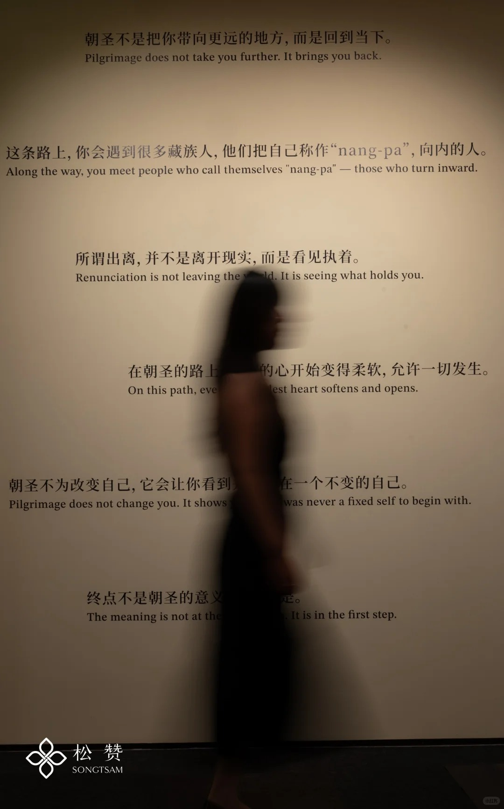
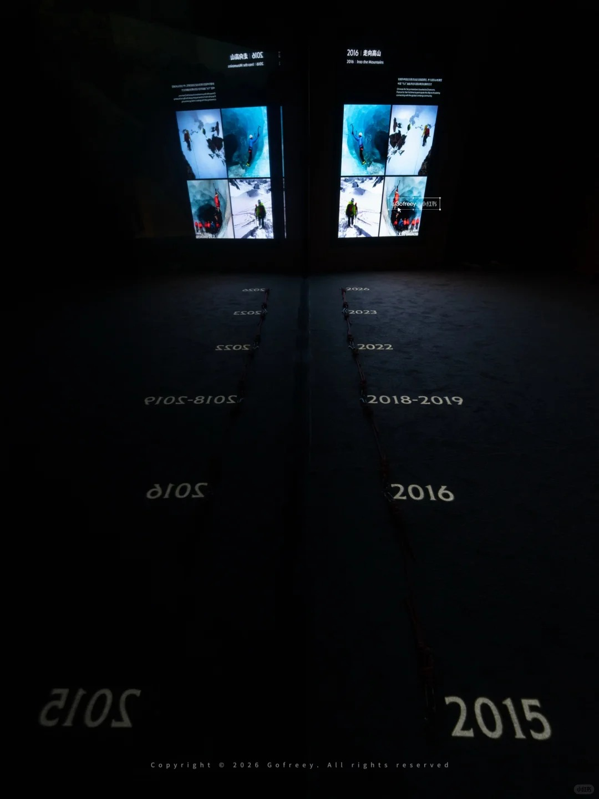
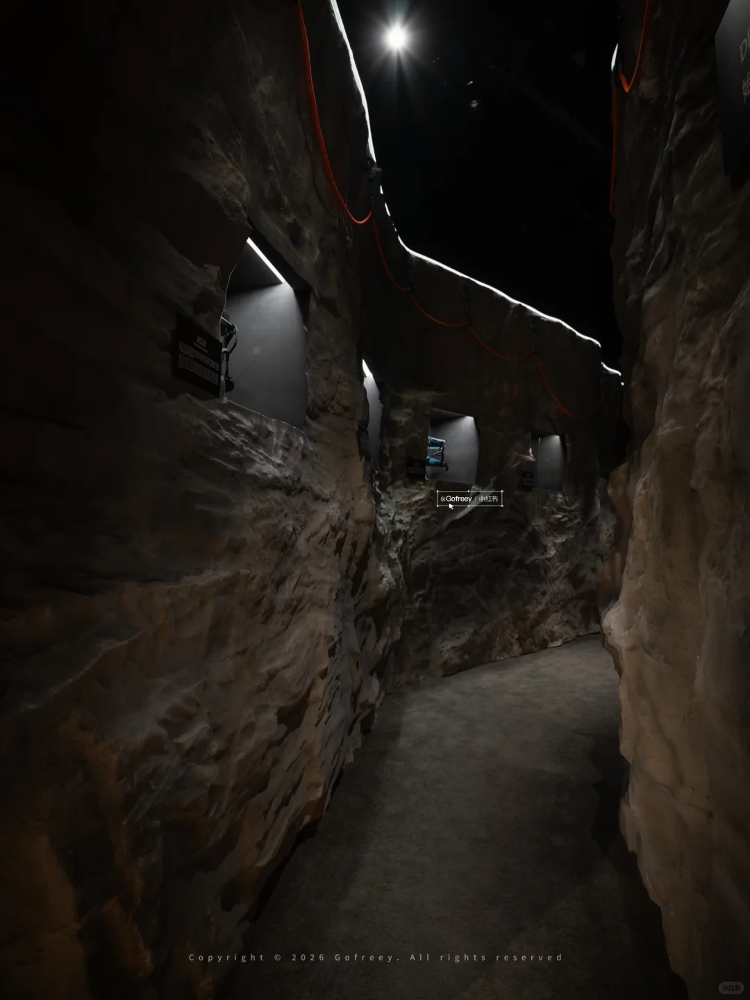
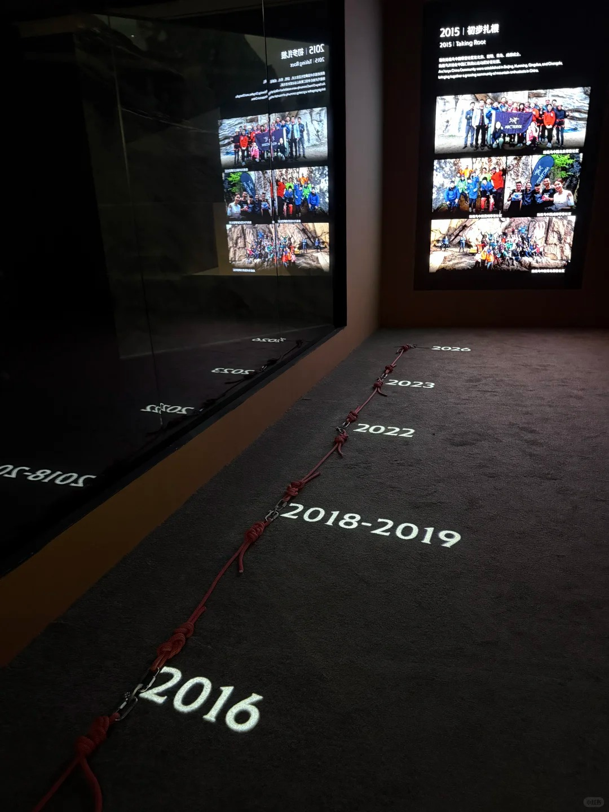
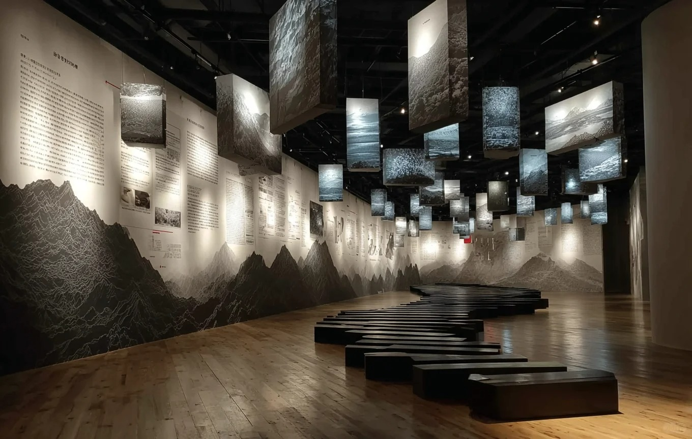
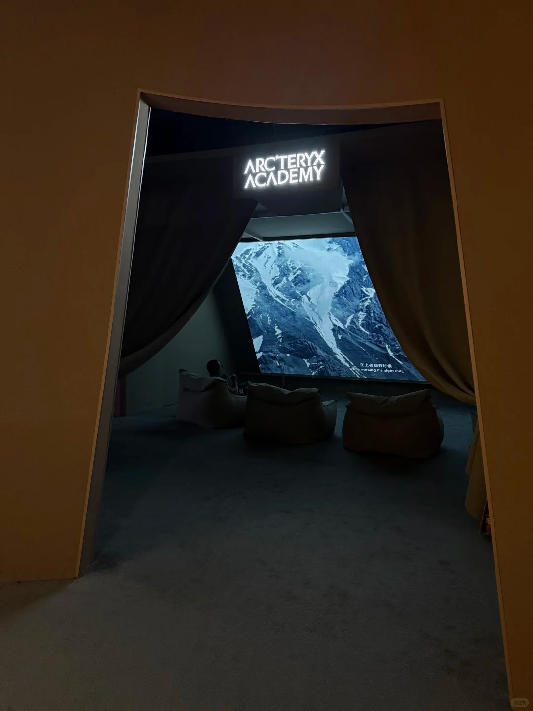
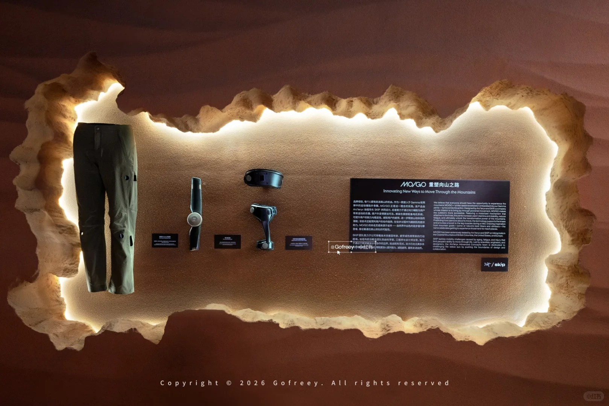
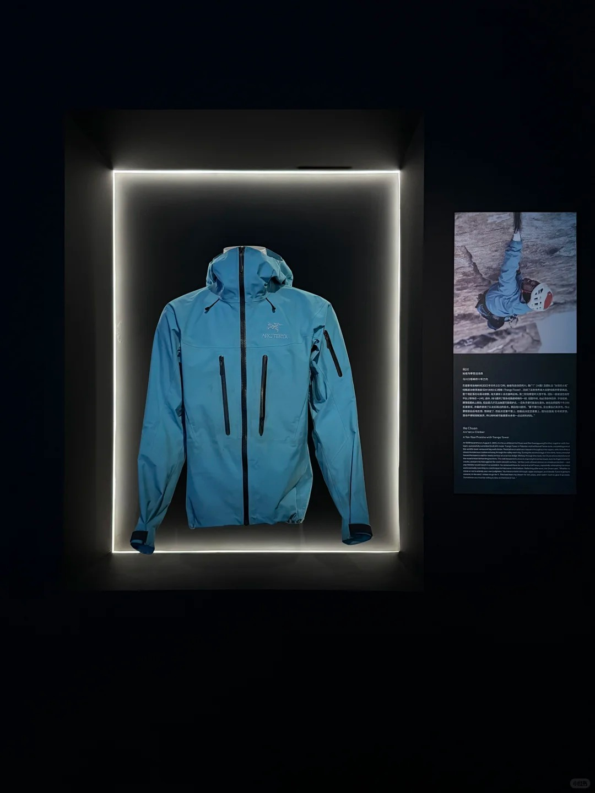
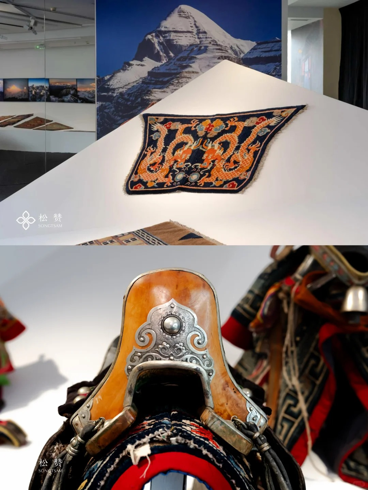
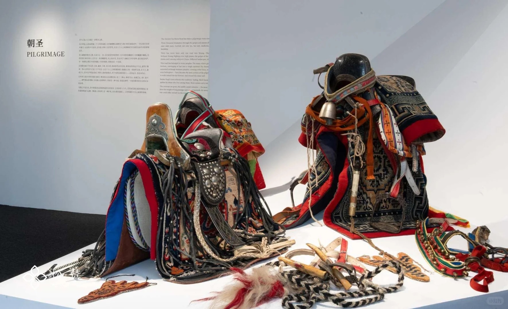
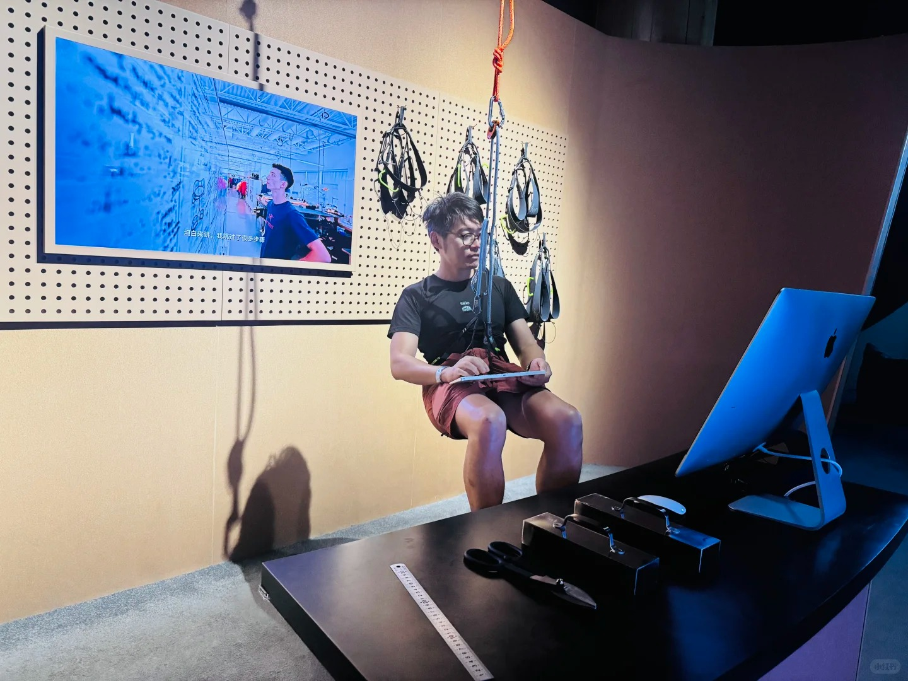
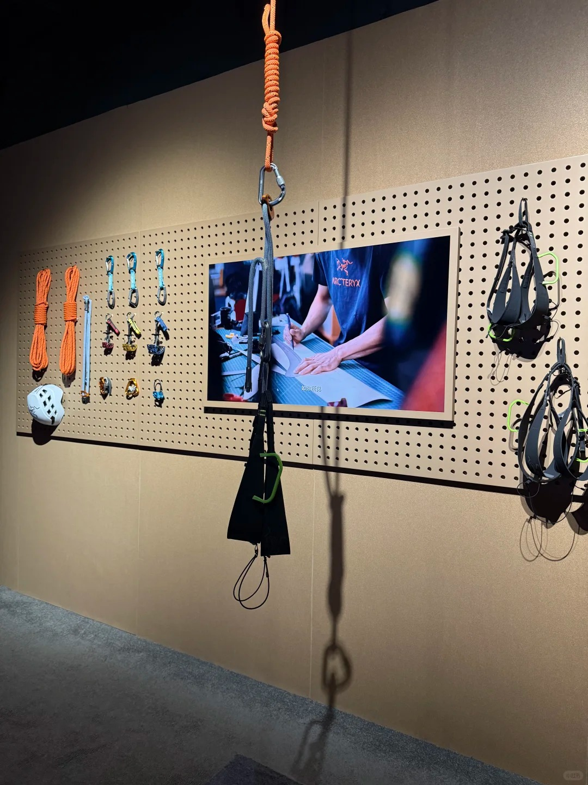
每一段设计对游客传达一层信息，同时对政府/机构考察团传达第二层信息
从传播到落地——让展览真正触达目标人群
后续工作：在地实地调研 · 民族口述史+影像采集 · 四件实物高仿/真品寻找 · 徒步线路实地摄影 · 管理体系流程图视觉转化 · 数字化平台接口确认
七大服务模块 · 从概念到落地全程覆盖
不含：互动装置物料制作与采购 · 实物展品征集/高仿定制 · 展厅装修施工 · 多媒体硬件设备
服务模块明细：
「呼吸之间」——从松潘到雪宝顶